Jeśli nie chcesz być biernym obserwatorem, jeśli chcesz
nie tylko “być” i “dowiedzieć się”, ale przeżyć, zrozumieć
i uczestniczyć to jesteśmy właśnie dla Ciebie!
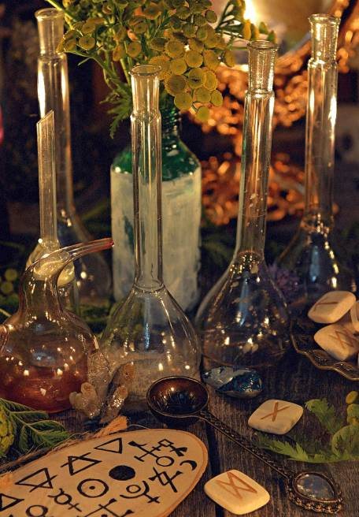
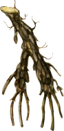
“Nie pytam dokąd chcesz jechać, ale
kim chcesz być podczas podróży.”
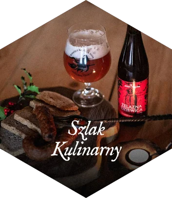
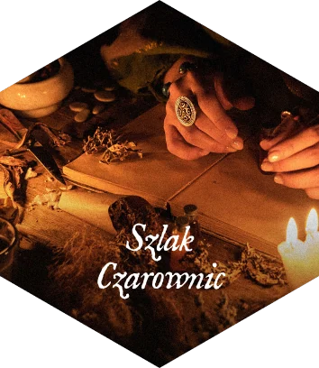
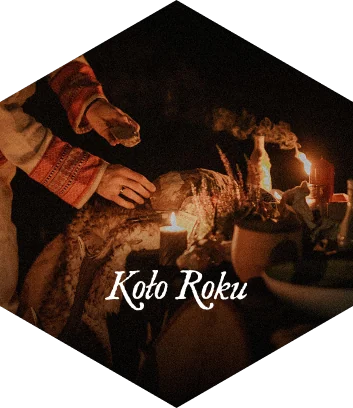
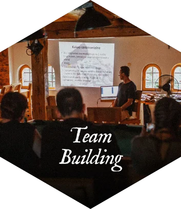
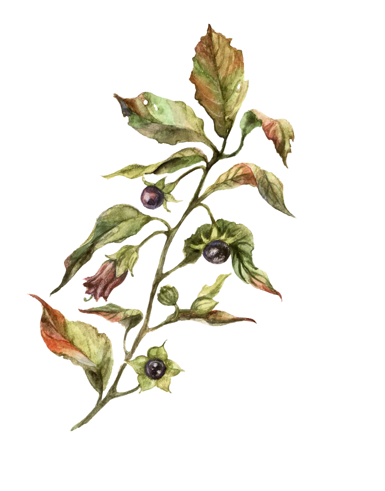
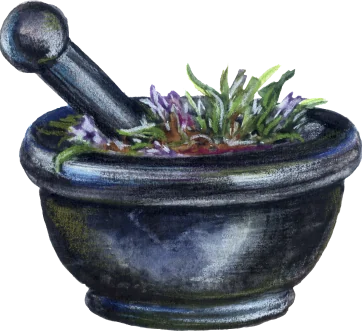
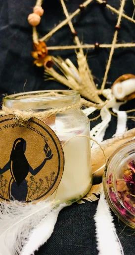
Welesowy Kram
Welesowy Kram to miejsce, w którym rzemiosło i sztuka łączą się z lokalną turystyką.
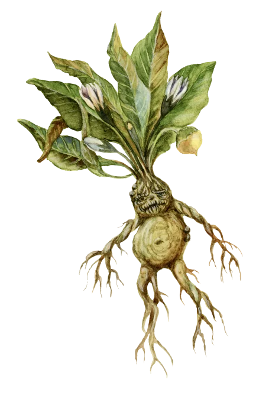
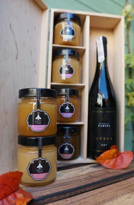